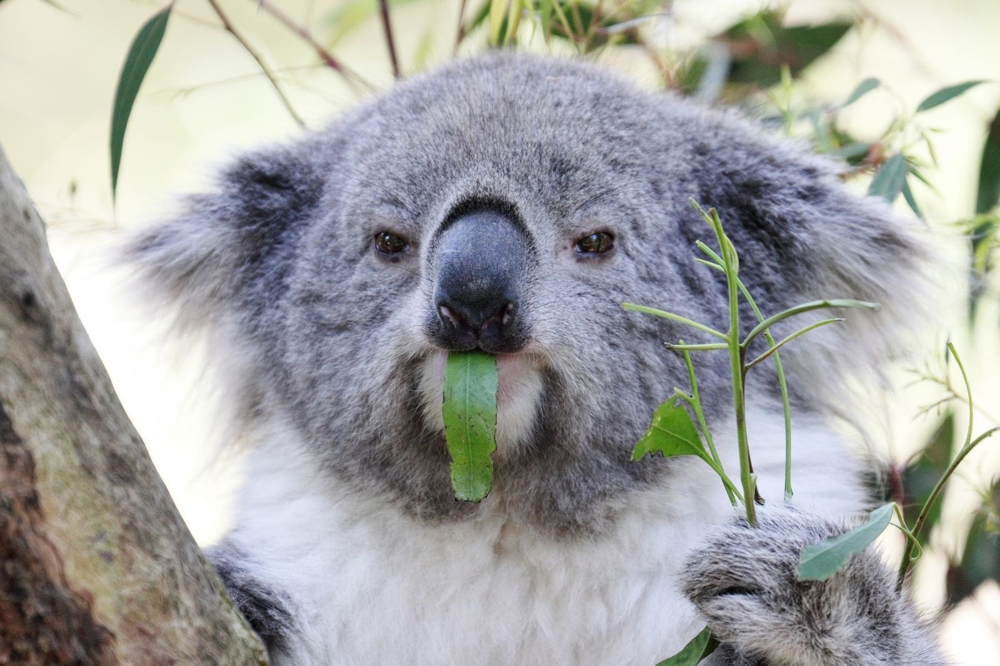

Коала — единственный ныне существующий вид семейства коаловых отряда двурезцовых сумчатых. Европейские завоеватели Австралии открыли животное в конце XVIII — начале XIX века и называли «медведем коала». Но коала совсем-совсем не медведь. Родство коалы с вомбатами и кенгуру для учёных было очевидным уже в первой четверти позапрошлого века.
А может и не бегать. Скорость обмена веществ в организме коалы почти в два раза ниже, чем у большинства млекопитающих (за исключением вомбатов и ленивцев), и обычно коалы малоподвижны, могут по 16—18 часов в сутки совсем не двигаться. Но при необходимости эти звери способны прыгать с дерева на дерево, плавать и неплохо бегать.
Коалы питаются почти исключительно побегами и листьями эвкалипта. Листья эти волокнисты, в них мало белка. И много фенольных и терпеновых соединений, ядовитых для большинства животных. Кроме того, молодые побеги, особенно ближе к осени, содержат синильную кислоту. Ужасная, казалось бы, еда — но её много (пока стоят эвкалиптовые леса), за неё не приходится конкурировать с другими видами.
Листья эвкалипта, помимо того, что они ядовитые, — очень жёсткие. Переваривать их коалам помогают живущие в кишечнике бактерии. В организме детёнышей коал сразу после отлучения от материнского молока необходимых бактерий ещё нет. Поэтому первое время детёныши питаются помётом матери, получая таким образом сразу и полупереваренную листву эвкалипта, и необходимую микробиоту, которая постепенно приживается в их кишечнике.
Хотя у коал не слишком много врагов, безопасной их жизнь не назовёшь. Коалы часто болеют. Они страдают от цистита, периостита черепа, конъюнктивита, синусита. Возле Сиднея открыта специализированная клиника для коал, где лечат попавших в беду животных.
Уникальный рисунок на коже пальцев встречается у нас, приматов, и у коал. Бытует мнение, что такие пальцы меньше скользят, но это не так.
С конца 1980-х в Австралии действует некоммерческая организация Australian Koala Foundation, цель которой — сохранение популяции коал. Фонд изучает коал, их болезни, борется за сохранение мест обитания этого животного, выступает с законодательными инициативами.